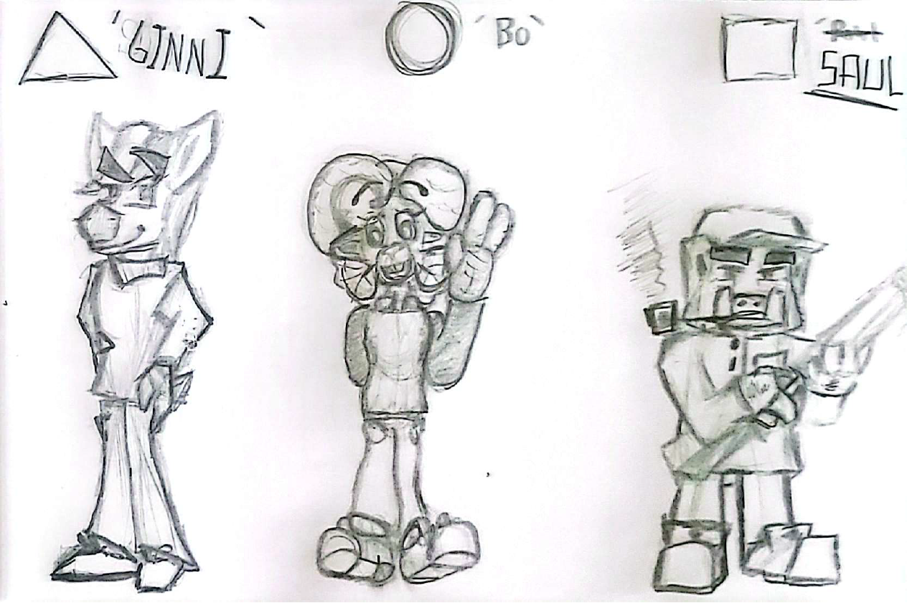
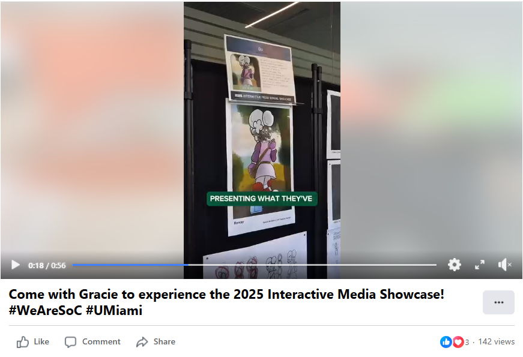
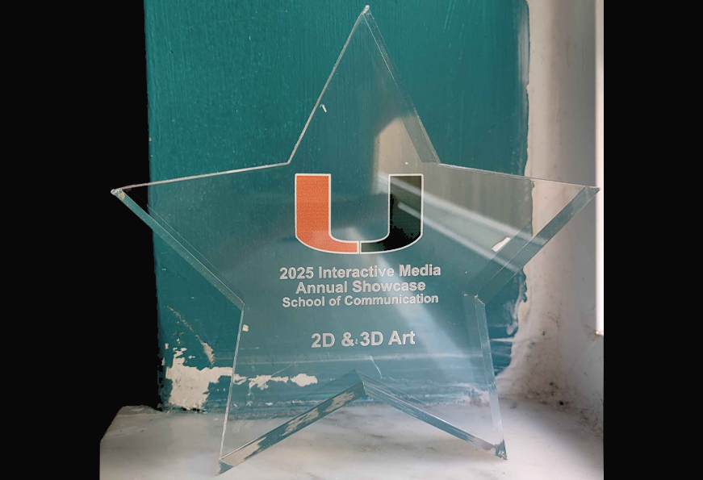
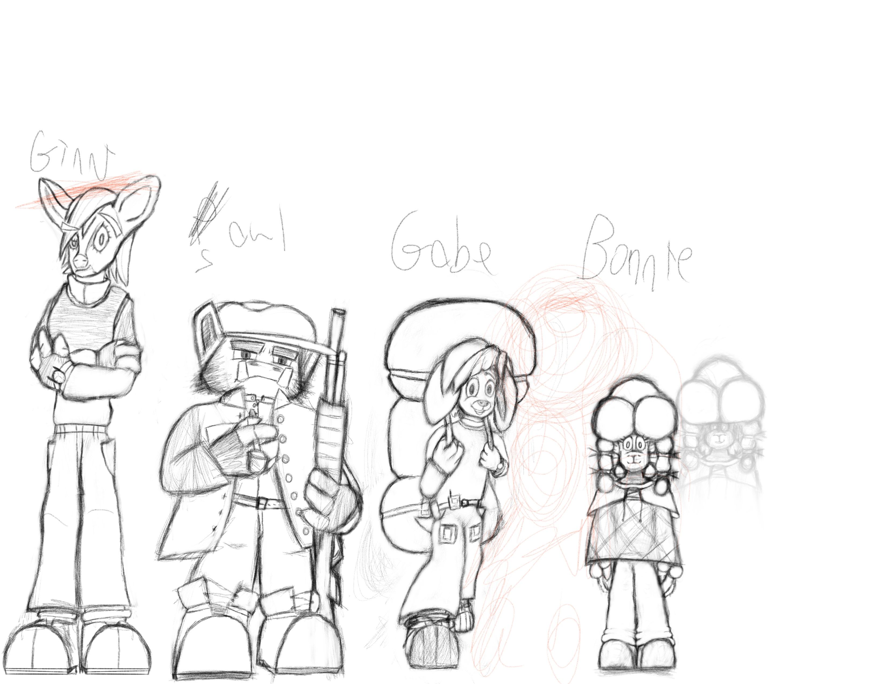

Case Study: "(Re)Designing My 2D Characters"
Type: Solo Design & Development | Duration: 3 Months
Product: 2D Renders of Multiple, Stylistically and Narratively Connected Characters
Since the Summer of 2023, I have been conceptualizing my first real design of a game, designing a stylized cartoon world of anthropomorphic animals who ultimately end up realizing and tackling both the hidden darkness that lies beneath their world as well as that which lies within themselves in what I'm ultimately envisioning as a metaphor for the coming of age and the long and arduous journey of self-discovery that often follows for better or worse as one view of themselves and the world matures with them.

My first drawing of three of my 2D characters, as I had initially designed them.
Hoping to further develop the visual design and aesthetic of these characters, I enrolled in the Spring of 2025 2D Character Design course at the University of Miami. Over the course of the semester, I worked on refining their designs, exploring different styles, and ultimately creating a cohesive visual language for what would hopefully be the main design of the game. This process included studying and implementing shape language--like making friendly characters soft and round, and making more menacing or duplicitous characters angular and sharp--color theory, outfits, and more to better communicate the personalities of my characters before any expositional or narrative elements were introduced.

The initial thumbnails for the redesign of my main character, Bo, to help visualize a silhouette + pose.
As part of my initial redesigns utilizing the techniques and principles learned in the course, I focused on refining the design of my main character, Bo the Sheep (who I'd give the last name Lanolidaughter during the process), to better fit both what I imagined her personality to be as well as in the context of the eventual narrative and gameplay. She was imagined as a curious and adventurous character, always eager to explore her surroundings and uncover the mysteries of her world--to a fault--who nonetheless begins the story in a completely naive and unaware state. Despite being a young adult, Bo is still very much a child at heart and even somewhat in mind--and the story I imagined for her would focus on that sense of naivete being stripped away as she is confronted with the often harsh realities of her world. Importantly, though, she starts the journey in a state of blissful unawareness--save for some underlying, repressed fears and trauma--and so much of my work was spent making her as friendly and approachable as possible, even bouncy.
This redesign proved to be a very pivotal moment in my journey as a game designer and as a character artist. I documented the design process for Bo's redesign alone very extensively, and I would end up referring back to it after the fact from time to time. I'd end up choosing this project to present at the 2025 Interactive Media Annual Showcase
 

Further refinement of Bo's design based on one of the thumbnails, including the initial sketching and the linework.


As well as redesigning Bo, I had also elected to take the opportunity to design four more characters that I had previously conceptualized but either never had the chance to set down on paper or had but in a much more limited capacity. These ended up being Ginni Brightfields, Saul Pitchkins, Gabe Mounde, and Bonnie. It would be these four characters who would be rendered as part of my final presentation for the course, showcasing their unique designs and personalities--as well as formulating aspects like props and outfits. It also lent me the opportunity to learn how to incorporate everything I had learned in redesigning Bo at a larger scale and within a tighter timeframe, as I had to sketch out all four of their designs more fully and integrate them into the overall narrative (as well as outline details like specific props and items, like Ginni's watch and Saul's shotgun) in roughly the same time it originally took me to redesign Bo.

The initial sketch of Ginni, Saul, Gabe, and Bonnie.


In the end, this project not only allowed me to expand my design skills but also deepened my understanding of character development and storytelling through visual art. This redesign, and the lessons I learned during the process, have been unambiguously valuable as I have continued to work and rework these characters and their stories.
This study has far from all of the various pieces I created during this process; You can view all of my work with these characters (including some other pieces I worked on during my time in the 2D Character Design course) in the Gallery!